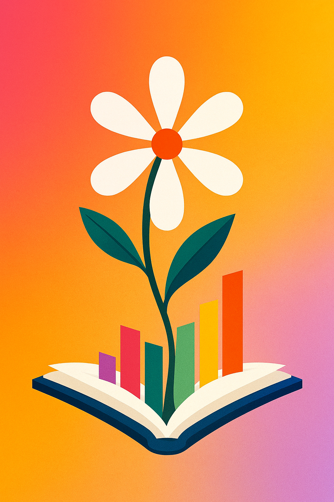

Modular web-based on-premises platform for integrated knowledge management, structured process handling, and digital asset management. Built on the WebExpress framework.
KleeneStar is a web-based application built on the WebExpress framework that serves as a central platform for knowledge management, project control, and asset management. It is characterized by its modular architecture, high configurability, and seamless interoperability of its components.
The name is derived from the Kleene star of formal language theory, a mathematical operator that enables arbitrary repetition. This metaphor symbolises the platform's core idea: to systematically connect elements (data, objects, modules) and enable flexible composition, so that complex structures and processes can emerge from simple building blocks.
KleeneStar follows a core-plus-modules model. The Core provides central cross-cutting services (auth, events, search, config). Domain modules implement concrete use cases. Plugins extend modules without modifying them.
Four deeply integrated modules share the Core's auth, event bus, and search index. Cross-module queries via WQL (WebExpress Query Language) connect them into one coherent system.
Collaborative creation, editing, and organisation of knowledge articles with versioning, comments, and fine-grained access control.
Record, assign, and track issues, work packages, and tickets. Configurable workflows map any process model. Direct links to articles and assets.
Central repository for documents, images, videos, and code libraries. Versioned, categorised, previewable, linkable with articles and issues.
Restricted, secure access for external users. Customers see selected articles, tickets, and assets, governed by fine-grained permissions.
The roadmap below mirrors the strategic plan from the KleeneStar concept document. The current step is the 0.0.2-alpha release, extending the structural foundation with WebExpress 0.0.11-alpha compatibility. A future step will migrate to WebExpress 2.0.0 for a more modern, performant, and consistent user experience.
Knowledge, Process, Asset modules as plugins. External IdPs (LDAP, AD, OpenID Connect, SAML) via IdentityManager. Customer Portal MVP for early feedback.
Workspaces, Classes, Fields, Forms, Statuses, Priorities, Workflows, Objects, Dashboards, configurable, structural, persistent.
Integrates the new dashboard, kanban, scrum, workflow editor, and formula editor components provided by WebExpress 0.0.11-alpha with the existing structural foundation. The first step beyond the alpha foundation toward interactive, user-facing functionality.
Switch to the next WebExpress generation: modernised UI components, overhauled dashboard engine, optimised data binding, and a more consistent design system across all modules. Once WebExpress 2.0.0 is stable, KleeneStar adapts to it.
Join-like queries, ranking mechanisms, audit logs, compliance features, import/export interfaces for migrating data from existing systems.
AI-powered search and recommendations, automatic summaries, real-time editing, official plugin marketplace.
KleeneStar is currently at 0.0.1-alpha, pre-release with structural foundation only. The next milestone is the 0.0.2-alpha release, which integrates with WebExpress 0.0.11-alpha to bring in interactive UI components.
git clone https://github.com/kleenestar-project/KleeneStar.gitdotnet restoredotnet runhttp://localhost:5000 in your browserIdentityManager (LDAP, AD, OIDC, SAML)KleeneStar is a private, non-commercial open source project. Contributions in many areas are welcome, from backend code to documentation, design, and community work.
Reach out via email or join the community channels. For bugs and feature requests, please use the GitHub issue tracker.